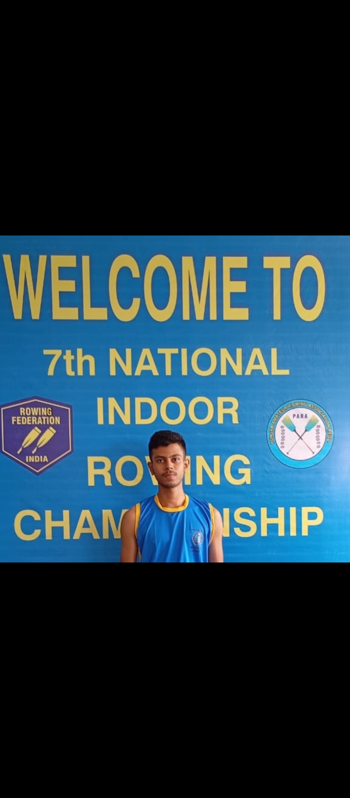

Ishan Singh

A student and rowing athlete from Kolkata, West Bengal, building experience through competitive rowing, teamwork, discipline and leadership.
Competitive RowingTeam LeadershipSports AdministrationAbout
Ishan Singh is a student from Kolkata, West Bengal, India, with a strong interest in rowing and sports. Through school and club rowing, he has developed experience in teamwork, preparation, competition and the responsibilities that come with representing a team.
This profile is intended to share verified public information about Ishan’s sporting journey. It does not publish private contact details.
Rowing & Competition
Indoor National Rowing Championship
Participated in the 7th Indoor National Rowing Championship in Punjab and reported securing 14th position.
Inter State Challenger National Championship
Participated in the 8th Inter State Challenger National Rowing Championship in Bhopal in November 2025, representing West Bengal in Men’s Fours.
School Rowing Leadership
Served as a rowing captain at school, gaining experience in team coordination, discipline and responsibility.
Behind the Competition
Gained exposure to event documentation and administrative tasks alongside sporting participation.
What Rowing Has Taught Me
Rowing has helped me value consistency, teamwork, discipline and standing up for fair treatment. I aim to keep learning, improve through training and balance sport with my education.
Competition names, dates, positions and representation should be checked against certificates or official records before this website is published.